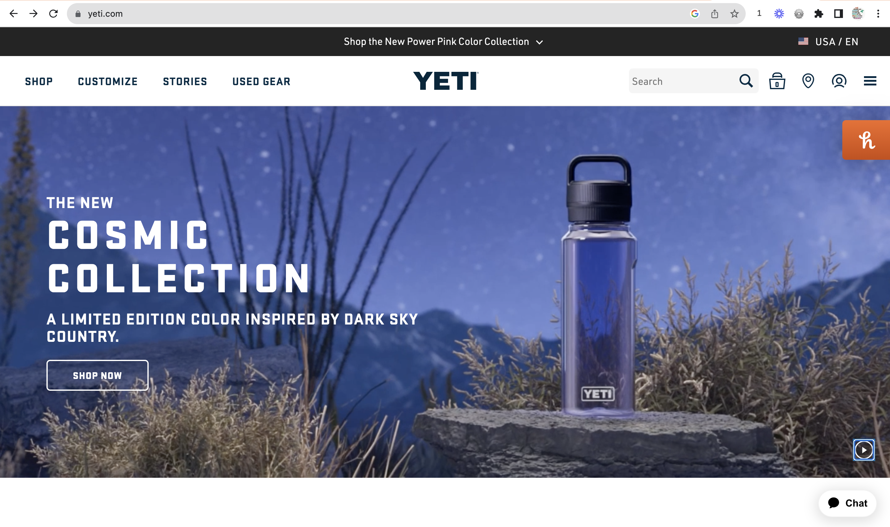
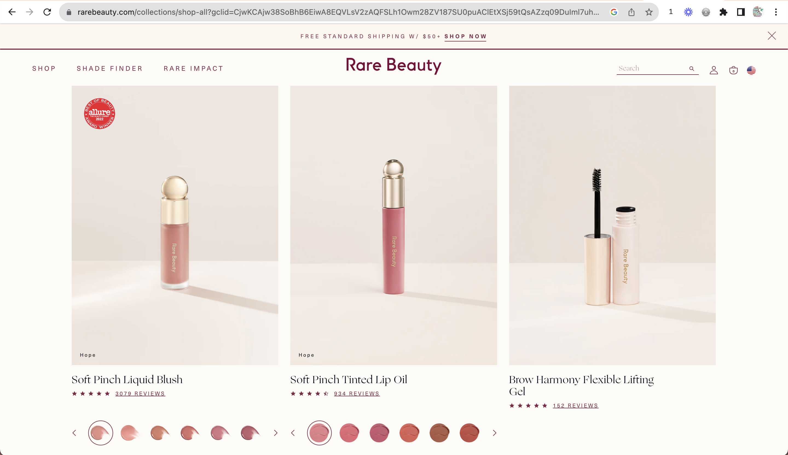
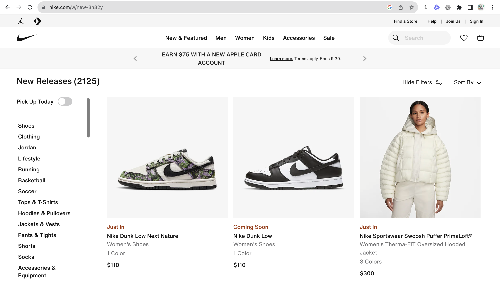

Rule of Thirds
Company/ Organization: Yeti
Yeti Website On the home page of the Yeti website there is a video showing a cooler and water bottle that consumers could potentially purchase. It is a great example of the rule of thirds. As you can see, the water bottle is on the right hand side of the video but is still the main focus. The text and other elements are on the left, still allowing the main subject to be the water bottle.
Alignment
Company/ Organization: Rare Beauty
Rare Beauty Website Right away, the home page of Rare Beauty depicts their top selling products. The products are all aligned in the center of each picture. The name of each product, along with the rating and link to reviews, are left aligned. The title of the webpage, the "add to cart" button, and the standard shipping option are all center aligned.
Proxmitiy
Company/ Organization: Nike
Nike Website This is the new and featured tab of the Nike website. Proximity is a great way to show relationships between text. On this webpage, the name, type, color, and price of the shoe are all in close proximity underneath the image demonstrating that they relate to the same product. The categories at the top are also in close proximity along with the sections on the left hand side.